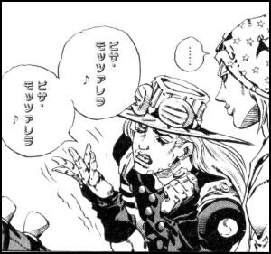

チーズアカデミーはチーズ養成学校です。
チーズの素晴らしさを、自給自足を通じて、できるだけ多くの人に知っていただきたい。
そして、アンパンマンの傍らにはいつもあの頼もしい名犬がいた、あの頃の当たり前をこの手で取り戻したい。
そんな思いから、チーズ養成学校「チーズアカデミーTOKYO」は歩みを始めています。
卒業後、パン工場勤務へのバックアップはもちろんのこと、
チーズ職人への就職・関連事業への転職もサポートします。
チーズ養成学校「チーズアカデミーTOKYO」
チーズアカデミーはチーズ養成学校です。
チーズの素晴らしさを、自給自足を通じて、できるだけ多くの人に知っていただきたい。
そして、アンパンマンの傍らにはいつもあの頼もしい名犬がいた、あの頃の当たり前をこの手で取り戻したい。
そんな思いから、チーズ養成学校「チーズアカデミーTOKYO」は歩みを始めています。
卒業後、パン工場勤務へのバックアップはもちろんのこと、
チーズ職人への就職・関連事業への転職もサポートします。


未経験からスタートできるよう、カリキュラムは多くの専門家や
現役のチーズ担当声優のアドバイスのもと、作られました。
チーズアカデミーでは、本格的な農園を使った実地研修を
行うことができます。プロとして活躍するチーズも
使用するような、広大な環境も整った農園を余すところ
なく使い、卒業時には本格的なチーズを自分の力で演じられる
実践力の養成を目指します。
欠かせません。チーズアカデミーでは、一流講師陣による、
立派なチーズになるために必要ないろはを余すところなく学べます
チーズそのものでなく、栄養学全般を学ぶことも
可能ですので、チーズ以外への展開も夢ではないでしょう。
講師についてより詳しくはこちらへ。
チーズアカデミーでは最後の2ヶ月間で卒業制作を実施。
卒業制作として、チーズ作りを実際に行います。卒業後、
一般参加によるティスティング審査があるため、作り手の
目線だけでなく、消費者の目線から、卒業制作作品としての
チーズを、しっかりと評価いただくことができます。
我々チーズアカデミーの成功の秘訣は優れた講師陣による手厚いサポートにあります。
彼らエキスパートの中でもとりわけ優れた実力を誇る４人を皆様にご紹介したいと思います。
是非こちらから彼らの自身溢れるご尊顔をご確認ください。
第17期卒業生のマルチーズのマルルちゃんが無事に、 今年からチーズとしてパン工場に勤務することになりました。 これからの彼女の活躍に皆様、ご期待ください。
第14期卒業生の小田切さんが無事、チーズになりました。 これはこれでありだと思うため、我々チーズアカデミーは 彼のカップヌードル業界への進出も応援します。
チーズアカデミー卒業生のコスゲさんによる チーズだけをふんだんに使用した話題のピザ屋 「Kosuge Pizza」が渋谷でオープンしました。
コスゲさんもカビに魅了され、良きパートナーというにふさわしいカビを見つけたようです。
会社情報
学校名
事務所所在地
TEL
FAX
チーズアカデミーTOKYO
〒107-0061東京都港区北青山3-5-6 青朋ビル2F
03-5413-5045
03-5413-5046
dummy@cheeseacademy.tokyo
説明会お申し込み・お問い合わせ
ぜひ一度、足を運んでみませんか。説明会は随時開催中。
その他、お問い合わせもお気軽にどうぞ。お待ちしております。
※チーズアカデミーは実際には存在しません。
間違っても問い合わせしないようお願いいたします。
いろんなチーズがあるけど今日、君が食べなきゃいけないチーズは何かな？
